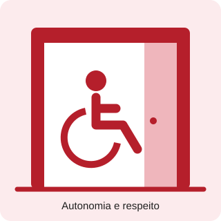

Acessibilidade em motéis: autonomia, privacidade e inclusão.
Inclusão também faz parte da hospedagem
Autonomia e privacidade para todos
Pessoas com deficiência também frequentam motéis e devem ser tratadas com respeito. Barreiras nos espaços e na comunicação podem dificultar essa experiência.
Este projeto apresenta exemplos de recursos de acessibilidade e incentiva a conversa sobre um atendimento sem preconceitos.
Fale diretamente com a pessoa, não apenas com seu acompanhante.
Pergunte antes de oferecer ajuda e respeite a resposta.
Informe com clareza os recursos disponíveis e suas limitações.

O que observar no estabelecimento?
Exemplos educativos de barreiras e melhorias
Área
Barreira
Exemplo de melhoria
Entrada
Degraus no caminho
Rota acessível sem degraus ou com solução adequada de acesso.
Quarto
Móveis bloqueando a passagem
Espaço para circulação e aproximação da cama.
Banheiro
Falta de apoio e espaço
Barras de apoio e espaço para uso e transferência.
Comunicação
Informações apenas faladas ou em texto pouco legível
Opções de comunicação por texto, informações legíveis e recursos conforme a necessidade do hóspede.
Esses exemplos não substituem uma avaliação técnica do espaço.
Lista educativa de acessibilidade
Use um nome fictício para praticar. Marque somente os recursos cuja presença você confirmou. Um item desmarcado significa que precisa de verificação, não que esteja necessariamente ausente.
Preencha a lista para ver os pontos a verificar.
Esta lista não certifica a acessibilidade do motel. Os dados não são enviados nem salvos.
Busque informações antes da visita
Entre em contato com o estabelecimento para confirmar os recursos de que você precisa. Peça informações sobre a entrada, o quarto, o banheiro e o atendimento.